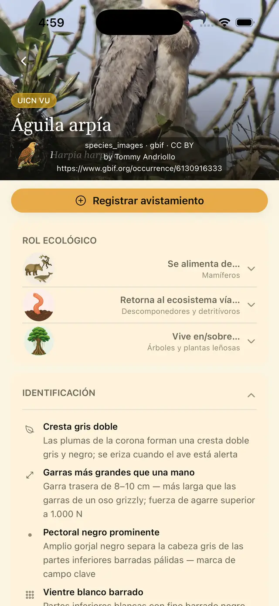
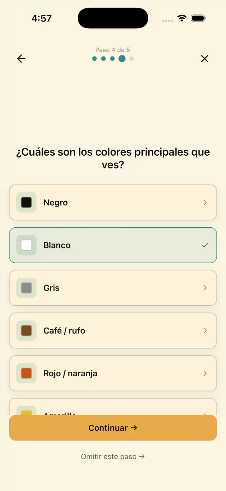
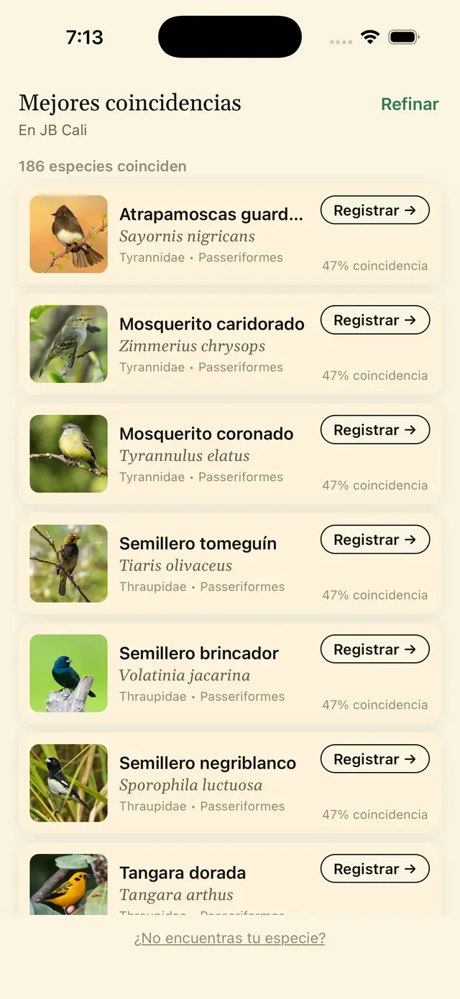
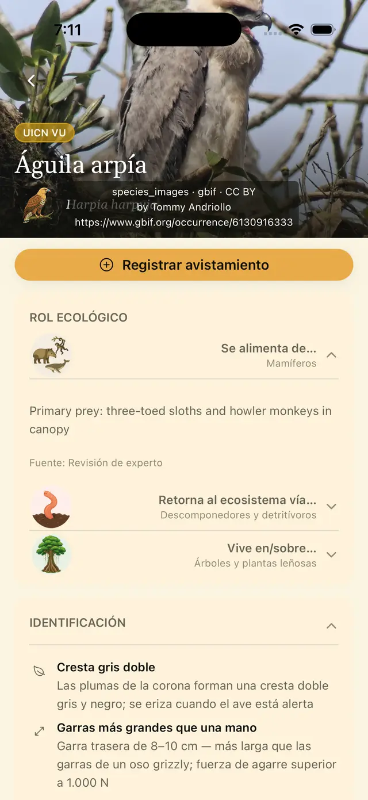
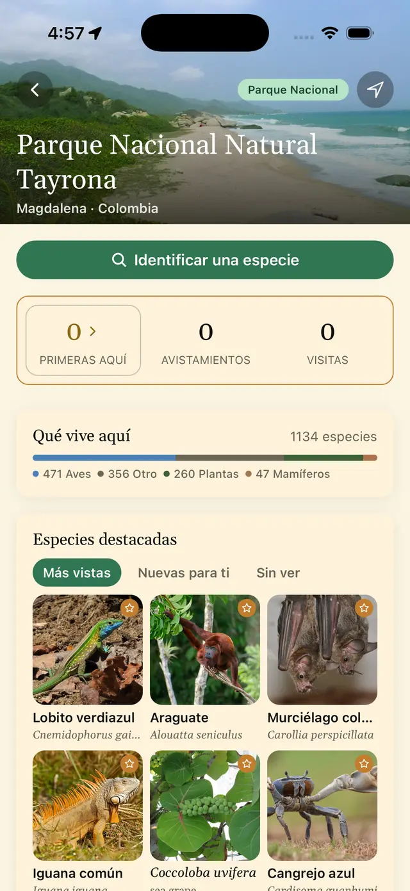
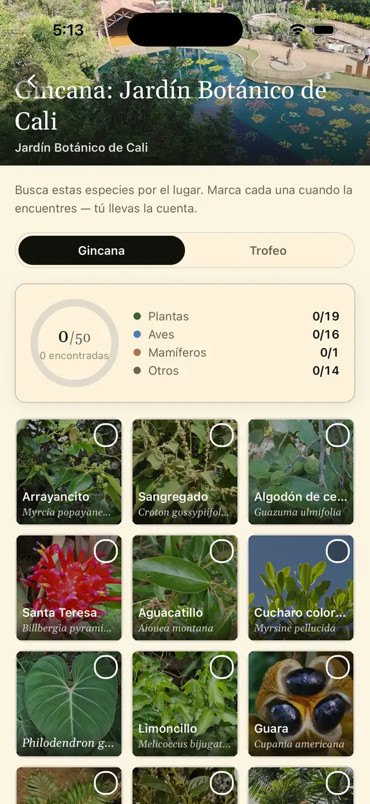
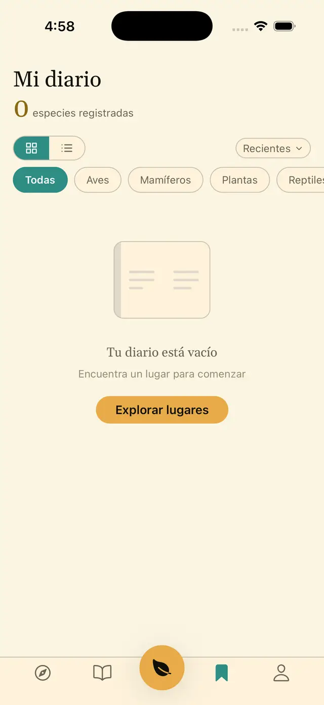
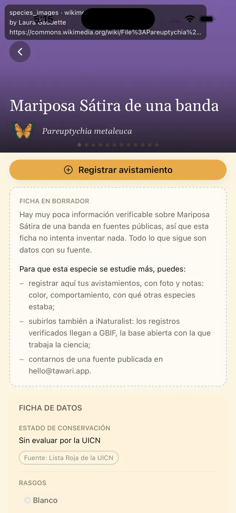
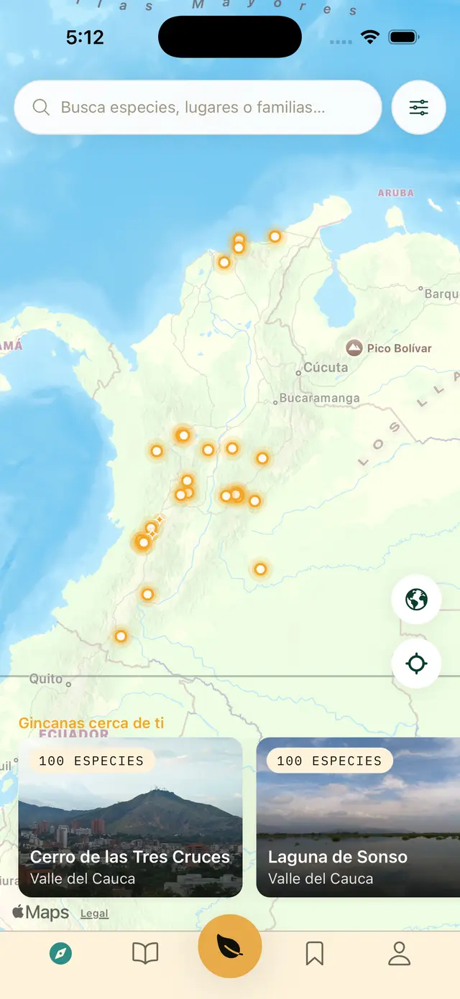

Identifica lo que tienes alrededor. Completa la gincana del lugar. Entiende cómo vive.
Tawari es una guía de campo viva de la biodiversidad de Colombia. Unas pocas preguntas —tamaño, color, dónde estaba— te llevan a las especies registradas de verdad en el lugar donde estás. Y la ficha no se detiene en el nombre: qué come, quién la come, dónde vive y, cuando hay una fuente que citar, qué significa para la gente de aquí.
9.493 especies · 25 lugares · 3 gincanas · 3.527 fichas escritas
Contado en la base de datos el 16 de septiembre de 2026.

Lo que hay dentro, contado
Números que puedes comprobar.
Ninguna cifra de esta página es redondeada ni estimada. Cada una salió de una consulta a la base de datos el 16 de septiembre de 2026, y cambian con cada versión.
Una ficha «escrita» pasó la redacción completa y una revisión. Una ficha «en borrador» dice lo poco que se sabe y no inventa el resto — más abajo verás una.
Cómo funciona
Del «¿qué es esto?» a «así vive».
Unas pocas preguntas, en orden.
Primero, ¿fauna, flora u hongos? Si es un animal, ¿de qué tipo? Para un ave son cinco pasos: cuál silueta se parece más, cuáles son sus colores principales (hasta cuatro, los más llamativos primero), qué tan grande es y dónde la viste. Cualquier paso se puede omitir.
Cada respuesta descarta especies. Al final ves las que coinciden, ordenadas por evidencia, y solo entre las registradas en el lugar que elegiste. El asistente no adivina: si una especie no está registrada allí, no aparece.

Las que coinciden, y por qué.
La lista muestra las mejores coincidencias con foto, nombre común y científico, familia y orden, y el porcentaje de coincidencia de cada una. En la captura: un ave pequeña, amarilla y negra, vista en el dosel del Jardín Botánico de Cali — 186 especies coinciden, y arriba quedan atrapamoscas, mosqueritos, semilleros y tangaras. Si ninguna te convence, puedes registrar el avistamiento sin identificar, con la coincidencia más cercana y una nota, y volver a él después.

Cómo reconocerla, qué come, dónde vive.
- Identificación: cada rasgo con su nivel de confianza. Para el águila arpía: «cresta gris doble», «garras más grandes que una mano».
- Rol ecológico: se alimenta de…, retorna al ecosistema vía…, vive en/sobre…, con el grupo al que apunta cada relación y su fuente.
- Rol en el ecosistema, distribución, taxonomía y estado en la Lista Roja de la UICN cuando existe una evaluación.
- Fuentes de datos y de fotografías en cada ficha. Cada foto lleva autor y licencia; solo usamos imágenes con licencias abiertas (CC0, CC BY, CC BY-SA).

Qué vive aquí, según los registros.
Veinticinco lugares publicados, del Parque Nacional Natural Tayrona al Puracé, de la Ciénaga Grande de Santa Marta a los jardines botánicos de Bogotá, Medellín y Cali. Cada guía de lugar lista las especies registradas allí por observaciones reales, no por lo que «debería» haber.
En Tayrona, «Qué vive aquí» cuenta 1.134 especies: 471 aves, 260 plantas, 47 mamíferos y 356 de otros grupos —insectos, reptiles, hongos, anfibios, arañas—. Cada guía abre con «Identificar una especie» y destaca las más vistas, las nuevas para ti y las que te faltan.

Un motivo para volver.
Una gincana es una lista corta de especies para buscar en un lugar. Hoy hay tres, curadas por el equipo de Tawari: Jardín Botánico de Cali, Cerro de las Tres Cruces y Laguna de Sonso. Cada una trae cien especies en dos listas: cincuenta en la gincana y cincuenta más en el trofeo, para quien quiera seguir. En Cali: 19 plantas, 16 aves, 1 mamífero y 14 de otros grupos, con la cuenta por grupo a la vista.
No hace falta terminarla. Cada especie que marques se queda en tu cuaderno.

Guárdalo con su fecha y su lugar.
Registra lo que viste con fecha, lugar, una nota y una foto si quieres. Es tuyo y nadie más lo ve: con esta versión, nada de lo que registras se publica en ningún sitio. Si cambias de teléfono, tu cuaderno te sigue.
La captura muestra un cuaderno recién estrenado, sin registros: preferimos enseñarlo vacío a inventar avistamientos para la foto.

La columna ecológica
Quién come a quién.
La sección «Rol ecológico» de cada ficha tiene tres filas. Para el águila arpía, la app muestra estas tres, tal cual, con el grupo al que apunta cada relación y el detalle al abrir la fila:
Mamíferos. Presa principal: perezosos de tres dedos y monos aulladores, en el dosel.
Fuente: revisión de expertoDescomponedores y detritívoros. Un depredador ápice no tiene depredadores; la fila dice cómo regresa.
Fuente: revisión de expertoÁrboles y plantas leñosas. Anida en árboles emergentes, como la ceiba, en bosque bajo intacto.
Fuente: revisión de expertoHoy 140 especies muestran su columna, con 283 relaciones publicadas. Otras 1.115 relaciones ya extraídas esperan revisión y no se muestran hasta pasarla. Preferimos una ranura vacía a una inventada.
Cuando no sabemos
La ficha lo dice.
De 9.493 especies, 3.527 tienen ficha escrita. Las otras 5.958 son fichas en borrador. Una ficha en borrador dice en una frase que hay muy poca información pública verificable sobre la especie, muestra lo que sí está documentado —nombre, taxonomía, registros, fotos— y no inventa nada más.
Y te dice cómo ayudar a que esa especie se estudie más: registra tus avistamientos aquí, con foto y notas; súbelos también a iNaturalist, porque los registros verificados llegan a GBIF, la base abierta con la que trabaja la ciencia; o cuéntanos de una fuente publicada.
Ficha en borrador
Así se ve en la app. Dibujada como un borrador, no como una ficha terminada — sin color de alarma, sin icono.

Conocimiento con nombre y apellido
Quién lo dice, y de dónde.
Algunas especies significan algo para alguien en particular. Cuando existe una fuente que citar, la ficha lo cuenta con atribución específica: un pueblo, un lugar, un autor. La ficha del jaguar, por ejemplo, cita la cosmología de los kogi de la Sierra Nevada de Santa Marta y el trabajo del etnógrafo Gerardo Reichel-Dolmatoff sobre los muiscas de la sabana de Bogotá.
Cuando no hay una fuente atribuible, la sección no existe. Nunca «los indígenas». Nunca «la medicina tradicional». Nunca instrucciones de preparación ni afirmaciones médicas. Es una sección entre varias, no el titular.
Aprender
El panorama.
La pestaña Aprender tiene hoy 25 biomas —del páramo al manglar—, 63 páginas de familias y órdenes, y 20 ensayos cortos de seis a nueve minutos, conectados a las especies que encuentras: «Qué mide realmente la Lista Roja», «Cómo funcionan las estaciones en los trópicos», «La bandada mixta de la mañana: por qué quince especies de aves llegan de repente juntas».
Dónde estamos
Pre-beta. Con cuidado.
- Hoy: pre-beta cerrada, solo en Colombia. Primero en iPhone, por TestFlight. Android después.
- Lo que verás: fichas escritas para 3.527 especies, borradores honestos para el resto, y errores. Cada corrección que nos mandes entra.
- Lo que no hay todavía, a propósito: funciones sociales. Nadie ve tu cuaderno y no hay comparaciones con otras personas.
- Sin publicidad ni rastreo: ni en la app ni en este sitio.
De dónde salen los datos
Fuentes, no opiniones.
- Nombres y taxonomía: SACC, IOC, eBird/Clements, Avibase, GBIF y SiB Colombia.
- Qué vive en cada lugar: registros de GBIF y eBird en esas coordenadas — 20.875 filas lugar–especie en los 26 lugares.
- Relaciones ecológicas: GloBI y curación manual, con nivel de confianza en cada fila.
- Fotos: Wikimedia Commons y GBIF, solo con licencias abiertas y con crédito al autor.
- Redacción: la IA nos ayuda a redactar las fichas a partir de fuentes citadas, no a inventarlas. Cada ficha escrita pasa una revisión, y las de especies tóxicas o psicoactivas, un filtro de seguridad adicional.
Lista de espera
Sé de los primeros en probarla.
Te escribimos una sola vez, cuando tu invitación a TestFlight esté lista. Nada más.
Reservas, jardines botánicos y clubes de observación
Una guía de lugar empieza por sus registros.
Si administras una reserva, un jardín botánico o un club de observación en Colombia y quieres que tu lugar tenga su guía y su gincana, escríbenos a hello@tawari.app. Lo primero que necesitamos son tus listas de especies.
